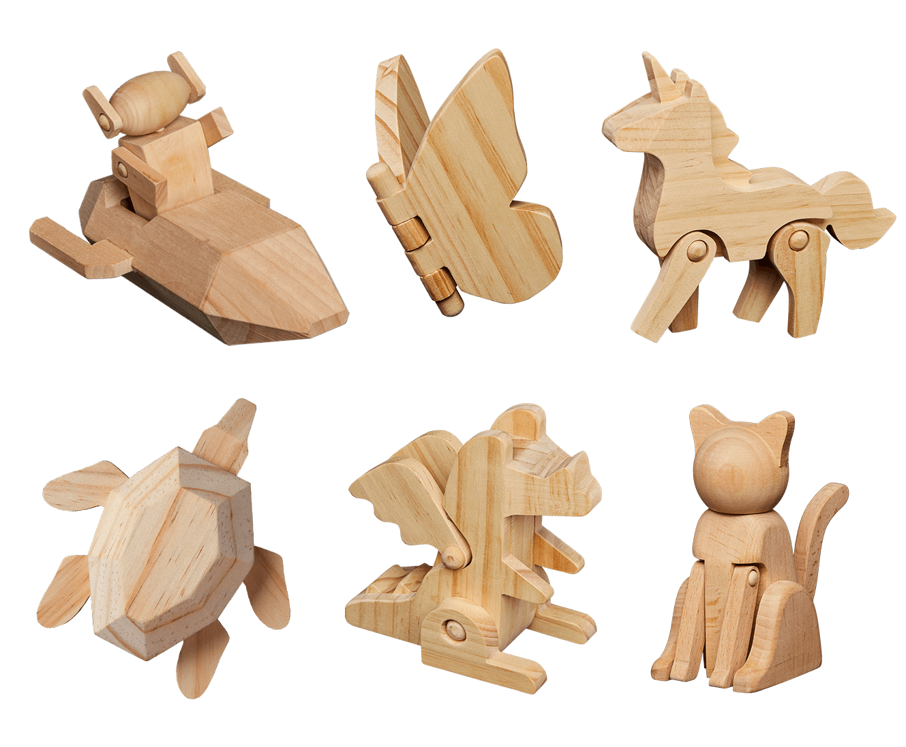
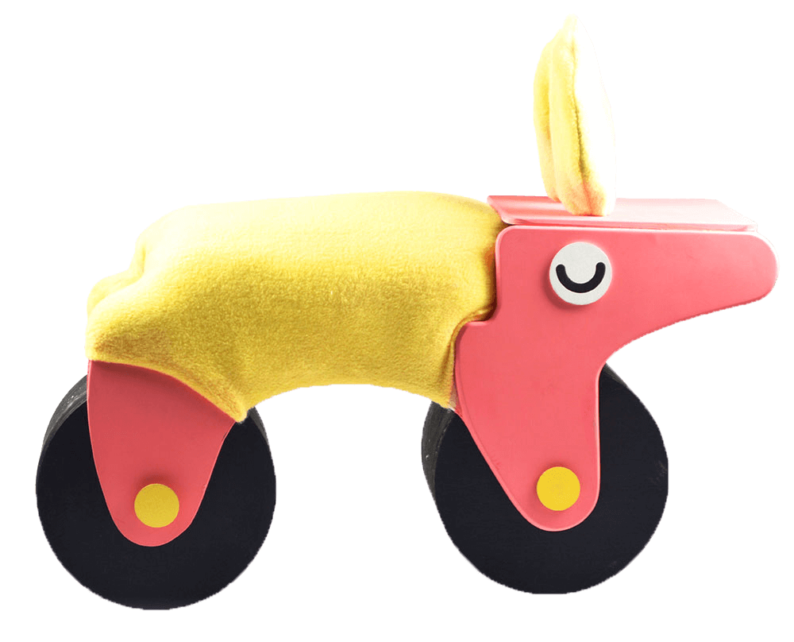

Designing for Play
For half a decade as an industrial designer, I designed commercial goods and experiences for young audiences. My work ranged across all kinds of media including wooden toys, animations, coloring activities, and craft supplies. My goal was consistent: to reward curiosity with wonder and delightful discoveries.
I’d love to share with you highlights about what I learned about designing for people as a toy designer by celebrating some of my favorite designs.
Simple, Mindful, and Valuable
The best designs need no instruction or a surplus of cues that distract at worst. For example, the Alien Explorer for Smarts & Crafts presented itself as a two piece wooden set with paints and paint brushes.
Without written instruction or a synopsis about who the explorer is, I invited the crafter to invent their own character and ways to play with the provided supplies. Whether the explorer had one or three eyes, a rocket with funky stripes or polka dots, the crafter was on their own unique journey in creating value and a relationship with their toy.
The Alien Explorer became a high demand item upon release, landing in Smarts & Crafts’s top 10 best sellers in the first two months with over 3,000 SKUs sold. Its success allowed me to design more toys of its kind for the Paint and Play series.
Capitalizing on Color, Shape, and Material
I believe that the most universal way to communicate is through our senses and emotions. In physical and digital products, we yearn to explore with what our body affords us through sight, smell, sound, taste, and touch. Therefore, effective choice in materials, shapes, and color can greatly add value to a product.
When it came to art making supplies, I loved any opportunity to reject the “typical.” Sets of crayons I designed for Craft Class like Galactic Crayons not only allowed makers to celebrate iconic shapes as crayons but also prompted them to see what curves, edges, and patterns could make as marks
In another part of the crayon spectrum, the Robot Smush Crayon featured consistent right angles and hard edges, but boasts Smarts & Crafts’s signature mosaic of colors smushed together.
As for material, I explored new ways to apply paint onto a page by changing how one can hold a brush extend either fine or gross motor movements with Hand Brushes and Fantastic Finger Brushes for Craft Class, and swapping different materials as bristles.
Personalizing How I Understand Users
The key to understanding young audiences in an interview is the same as it is for any other age group: tailoring your questions so that the volunteer is engaged, comfortable, and heard without bias.
I first gained experience play testing with children with my ride-on toy Manny. In a room full of prototypes, volunteers were free to roam, climb, push, and draw on anything. As they played, I asked open ended questions to gain insights on how to make Manny more accessible and exciting. Inviting them to imagine what kind of creature Manny was and observing which features they were drawn to educated the final form and finish. Manny would then be featured on Rhode Island School of Design’s portfolios.
Iterations and Collaboration
Alongside my quest to design for fun were designers of diverse specialties, shop technicians, mentors, and business experts that I consulted and collaborated with in order to deliver delightful creations to thousands of homes nationwide. I am exercised in sharing libraries of information including specs, 3D visualizations, prototypes, and presentations to stakeholders and manufacturers to perfect each millimeter and pixel of a vision. I learned to surrender ego and embrace iterations and edits as a necessary metamorphosis for the most wonderful product.
Gratitudes and Achievements
1. I take pride in being opportunistic and challenging all the components of a physical good – from packaging to product – to be sourced from renewable or easily recyclable sources. Small choices like swapping twist ties for fiber cordage to anchor a product in place or swapping plastic blister pack for cardboard cutouts make large impact when featured in thousands of products.
2. My designs reaching great distances through MoMA, Target, Walmart, Kid Made Modern, Smarts & Crafts, CAMP, Amy Sedaris, and Nest Magazine.
3. The joy in knowing somewhere beyond my drafting table someone is creating new memories and enjoying a toy, craft tool, coloring activity, web show, build kit, pop-up events, or stationary that I’ve nurtured with love and grown with as a designer.